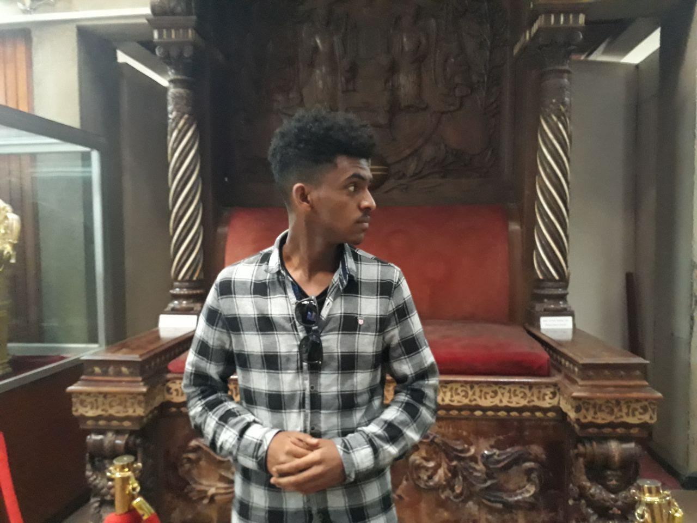

Mr. Nuredin Yesuf
About Me
hello there! my name is Nuredin Yesuf I am a second-year student at Adiss  Abeba institute of technology
Hobbies
In my free time, I like doing tons of thing that would lift my spirit such as hanging out with friends, doing some coding challenges, developing webs, working out and interesting
Web Development
I love developing websites on my free time, I started developing websites as entertainment in high school and I have been drawn to it since i am so passionate about developing sites and learning new thing about web development my goal is to become great at web development and make it a real-time job.Teaching
I recently started teaching high school and elementary students. I always wanted to be a teacher. it is a great job and fun seeing people learning new and amazing stuff from you. since I am a software engineering student I mostly give coding and programming lectures to students I also teach language and math to elementary students, I do this kind of jobs for free at summer time .
Charity Work
I love helping others since I was a little kid and when I joined high school me and my friends organized a small group to help children and kids mostly children that can't afford school materials for their education we don't hand out money to people we buy some basic learning materials like books pens and other materials and give it to the children in person the smile and happiness we saw on the children when we hand them the books are priceless . after we joined campus we let other high school students take over the charity work so that the charity would keep ongoing.CONNECT WITH ME